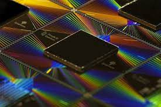

GPT 4

Criado em 2022, o Chat GPT da OpenAI representa uma das inovações mais marcantes no
campo da inteligência artificial. O projeto teve como principal objetivo desenvolver um sistema de
conversação capaz de compreender e responder a uma ampla gama de consultas e questões humanas de
forma natural e coerente. Ao integrar avanços significativos em processamento de linguagem natural,
o Chat GPT revolucionou a interação homem-máquina, facilitando a comunicação entre
humanos e computadores de maneira mais intuitiva e eficaz.
Sua utilidade abrange diversos campos, desde assistência educacional e suporte ao
cliente até geração de conteúdo e desenvolvimento de aplicativos de assistência virtual. O Chat GPT
permitiu a criação de chatbots e assistentes virtuais altamente sofisticados, capazes de
fornecer respostas detalhadas e personalizadas em tempo real, melhorando significativamente a
experiência do usuário em uma ampla variedade de setores, incluindo tecnologia, educação, saúde e
muitos outros. Sua capacidade de compreender nuances linguísticas e responder de maneira contextualmente relevante estabeleceu
um novo padrão de excelência no campo da inteligência artificial e transformou a maneira como interagimos com
a tecnologia no dia a dia.
Dinheiro Digital
O conceito de dinheiro digital refere-se a uma forma de moeda eletrônica que está se tornando cada vez mais popular na era moderna. Com a crescente digitalização das transações financeiras, métodos como o Pix e as soluções oferecidas pelo Nubank estão redefinindo a maneira como as pessoas lidam com suas finanças diárias. O Pix, lançado em novembro de 2020 pelo Banco Central do Brasil, foi projetado para facilitar transferências instantâneas entre contas bancárias, eliminando a necessidade de transações físicas ou cheques. Por outro lado, o Nubank, fundado em 2013, é uma fintech pioneira que oferece serviços bancários digitais simplificados, incluindo uma conta digital e um cartão de crédito sem taxa anual, ampliando o acesso ao dinheiro digital para milhões de brasileiros.
Tanto o Pix quanto o Nubank têm como objetivo oferecer conveniência e eficiência aos usuários, simplificando as transações financeiras e reduzindo a dependência de métodos tradicionais. Com o Pix, as transferências se tornaram instantâneas, permitindo aos usuários enviar e receber dinheiro a qualquer momento, de forma rápida e segura. Da mesma forma, o Nubank fornece acesso a serviços financeiros sem a necessidade de visitar fisicamente uma agência bancária, oferecendo uma experiência bancária completa por meio de um aplicativo móvel intuitivo. Os benefícios incluem maior facilidade de acesso, transações rápidas, redução de taxas e a eliminação de processos burocráticos, o que contribui para a inclusão financeira e a modernização do sistema financeiro no Brasil.
Supremacia Quantica

a Supremacia Quântica tem sido um dos marcos mais notáveis no campo da computação quântica. O conceito foi inicialmente introduzido em 2012 por John Preskill, da Caltech, e tem como objetivo demonstrar a capacidade dos computadores quânticos de realizar tarefas que estão além da capacidade dos supercomputadores clássicos mais avançados. A conquista da Supremacia Quântica representa um avanço significativo na pesquisa de computação quântica, proporcionando uma visão mais clara do potencial e das aplicações práticas dessa tecnologia inovadora.
Os benefícios potenciais da Supremacia Quântica são vastos e incluem avanços significativos em áreas como criptografia, simulação de sistemas quânticos complexos, otimização de processos e modelagem molecular. Ao realizar cálculos complexos em velocidades inimagináveis para computadores clássicos, os computadores quânticos demonstram um potencial revolucionário para resolver problemas complexos que desafiam a capacidade das máquinas convencionais. A conquista da Supremacia Quântica impulsiona a investigação e o desenvolvimento contínuos na área, oferecendo novas perspectivas para a resolução de desafios complexos e o avanço da ciência e da tecnologia.
Os esforços contínuos em direção à Supremacia Quântica são impulsionados pelo desejo de superar as limitações atuais da computação clássica e explorar novas fronteiras de descoberta científica e inovação tecnológica. Embora ainda haja desafios significativos a serem superados, a pesquisa nesse campo promete mudanças profundas em vários setores, incluindo ciência, tecnologia, saúde, finanças e segurança cibernética, abrindo caminho para avanços revolucionários que podem transformar radicalmente a maneira como abordamos problemas complexos em todo o mundo.